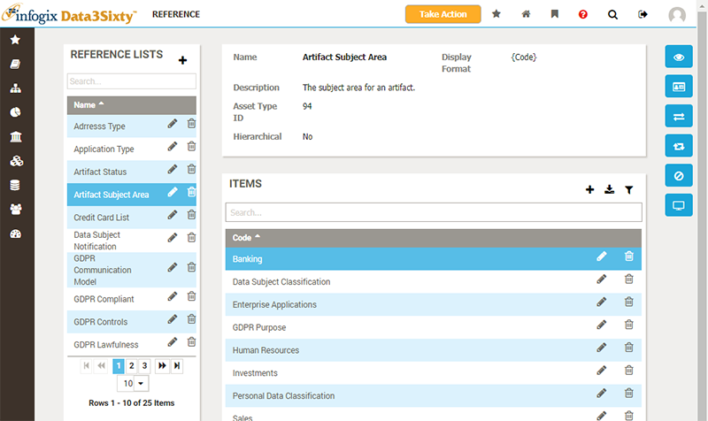
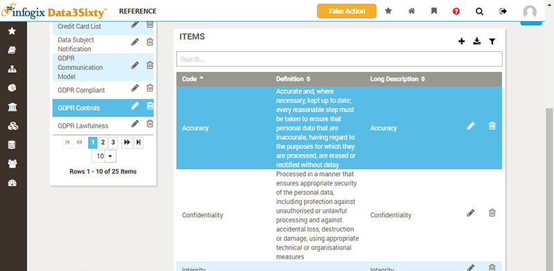

Click on the Reference button in the primary navigation to display the collection of reference lists which have been created in the application:

The collection of reference lists is shown on the left, with the details for the selected item shown on the right.
Reference lists have a name and description, and are composed of a list of items.
The set of fields for the reference list items can be customized. It is common to use the fields Code and Long Description, displayed as labels and tooltips respectively in drop-down lists which display the reference list values:
